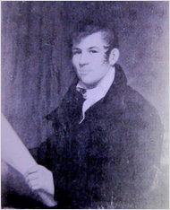

John Randall, Jr.
John Randall (Randel), Jr. was born in December 1787 and christened at the Albany Presbyterian church in January 1788. He was the son of John Randall (sometimes John Jr. himself) and Catherine Fairchild Randall. Like his father, a prominent Albany brass founder, this "John Randall, Jr." had a surprising number of similarly named contemporaries. This sketch attempts to focus on the Albany life of the much more widely widely known surveyor and innovator who mostly identified himself as "John Randel, Jr."
In 1790, he would have been one of two boys enumerated under his father's Watervliet home. In 1800, he was about thirteen and would have been one of the eleven family members accounted for in his father's North End household.
We seek information on his formal training. However, Surveyor General Simeon De Witt appears to have been his mentor. De Witt later stated that this Albany native had been with him in his office since "his minority" and that he had employed Randel on a number of projects.
In 1808, young John became a member of the Albany Presbyterian church.
By that time, he had begun to practice the trade/profession/art of the surveyor. In his own right, Randel conducted surveys and made a number of street maps of Albany and beyond. His client was the city of Albany although we cannot say that he held the tile of city surveyor or city engineer. In 1810, he produced a map of the "post road" (today's Route 9) from Albany to New York City. That work measures twenty-three feet in length and resides at the Albany County Hall of Records.
However, his fame lay far beyond the limits of his home town. In 1808, a distinguished commission awarded this young man a contract to survey and produce a street grid for the island of Manhattan. The first fruits of that incredible undertaking were published in 1811. That story and the long and varied career that followed is sufficiently chroniciled only by his modern biographer.
On a number of occasions afterwards, he was engaged by the State of New York under the auspices of Surveyor General De Witt.
He probably stood second only to State Surveyor General Simeon De Witt among early Albany's mapmakers.
John Randel, Jr. married twice. His first wife was his cousin, Matilda Harrison, who was his assistant as well. After her death in 1823, he wed college-educated Letitia Massey of Philadelphia in 1827. The details of those unions are chronicled in his excellent new biography.
Although he had a number of primary residences in New York and New Jersey, he seems to have maintained a property in Albany as well. By 1820, he was listed in the Albany city directories as a surveyor at 168 North Market Street. He was at that address in 1830.
Other (different) John Randall Jr's. were alive during his lifetime. One was a settler of Norwich in 1800 and held land there in 1798. He was a trustee of the Bank of Chenango. In 1833, he was identified as the "chief engineer" of the Ithaca & Owego Railroad. At that time, he was a resident of Ithaca.
John Randel, Jr. died in Albany in August 1865. Cause of death is said to have been a "brain inflammation." We seek information on the particulars of his passing.
A comprehensive biography by Margeurite Holloway entitled The Measure of Manhattan: The Tulmultuous Career and Surprising Legacy of John Randel, Jr., Cartographer, Surveyor, Inventor (New York: Norton, 2013), has just appeared to become a prime resource for family and personal material on the Randalls/Randels. It certainly merits a much closer examination.
Poor quality likeness of a portrait said to be of young Randall. Copied from an online posting. Unattributed, but in the style of Ezra Ames.